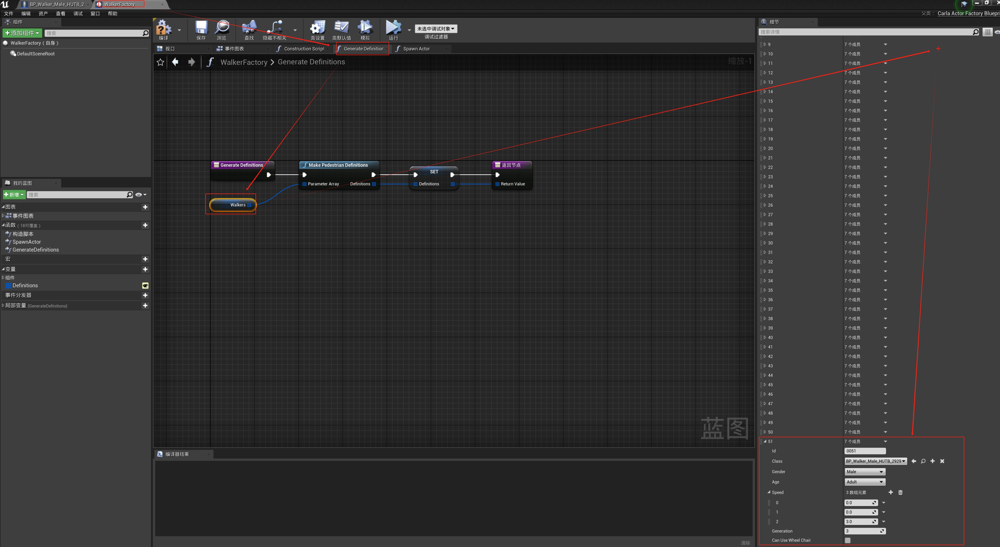
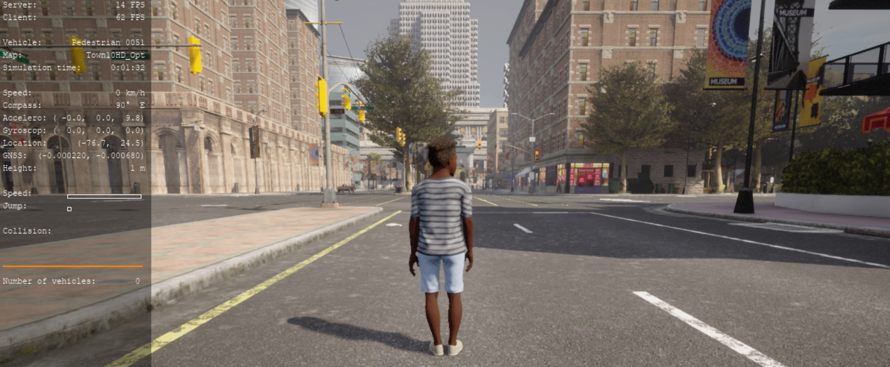

内容创作 - 行人
Carla 在 WalkerFactory 蓝图中提供了一套全面开箱即用的行人。用户可以通过自定义行人进行扩展。为3D动画建模人体解剖学非常复杂，超出了本文档的范围。因此，我们向用户推荐替代资源，以学习如何在3D建模应用程序中对人进行建模。本指南介绍如何导入和配置一个完整的三维人体模型，以便在 Carla 使用行人。
建模
行人是绑定到关节和骨骼的骨骼层次的几何体的组合。它们应该作为骨架网格导入到虚幻引擎中。网格将绑定到骨架定义。有关骨骼定义的信息可以封装在从3D应用程序导出的FBX文件中。
-
几何
行人应该有30000到50000个面。这应该包括所有的解剖和衣服。理想情况下，模型应该具有人体尺寸，如果需要，可以在导入后重新缩放。
注意
请仔细注意3D应用程序的单位。一些应用程序以米为单位工作，而另一些应用程序以厘米或任意单位工作。
-
骨骼层次
骨骼层次应遵循 Carla 的 GEN3 骨骼层次，下载模板 以与您自己的模型一起使用。您可以删除人体几何图形并将其替换为您自己的。这将与虚幻引擎中 Carla 的预生成骨骼定义相匹配。

-
蒙皮和权重绘制
准备 3D 模型以使其正确移动的一部分是确保模型的各个顶点以正确的方式受到骨架中每根骨骼的影响。例如，控制三维参与者手腕的骨骼应该控制手和手腕的顶点。它应该对前臂稍远的顶点产生轻微影响，但不应该影响肘部附近的任何顶点。因此，您应该使用 3D 应用程序的权重绘制工具来微调每根骨骼对网格的影响。这是一个复杂的过程，我们建议用户参考其他资源以了解有关人类参与者蒙皮和权重绘制的更多信息。

将行人导入 Carla
完成网格的几何形状并将其绑定到骨架后，您应该将其从 3D 应用程序中以 FBX 格式导出。完成导出后，在 Carla 内容库中找到合适的文件夹位置，然后将 FBX 拖放到内容浏览器中。您可能希望将自定义行人放置在现有行人 内容(Content) > Carla > Static > Pedestrians 旁边。
在导入选项弹出对话框中，确保选择了骨架网格体(Skeletal Mesh)和导入网格体(Import Mesh)，并且导入内容类型(Import Content Type)设置为几何和蒙皮权重(Geometry and Skinning Weights)。在骨骼(Skeleton)部分，选择 Carla 的预生成骨架定义Skel_GEN3。然后按Import All。
Skel_GEN3定义已指定行人动画。

通过 Python API 让你的新行人可以访问
成功将行人导入 Carla 的内容库后，您现在必须通过 API 使行人可用。

1. 新建行人蓝图。
导航到现有行人蓝图的位置 内容(Content) > Carla > Blueprints > Walkers。复制 GEN3 蓝图，例如复制 BP_Walker_AB001_G3 并重命名。
2. 将行人骨架网格绑定到行人蓝图上。
双击复制的蓝图以在编辑器中打开它。您需要将蓝图的网格体(Mesh)组件更改为新的行人模型。将刚刚从内容浏览器导入的骨架网格拖放到骨骼网格体(Skeletal Mesh)插槽中。

注意：下面的 材质中包含元素0-6，其中 元素0为眼框贴图、 元素1为眼睛贴图 、元素3为皮肤(MI_EuroWHand_MH)、元素4为衣服贴图、元素5为鞋子贴图、元素6为裤子贴图。
3. 将行人蓝图添加到蓝图库中
- 在
内容(Content)/Carla/Blueprint/Walkers中，打开WalkereFactory文件。- 在 Generate Definitions 选项卡中，双击 Walkers 。
- 在 细节(Details) 面板中，展开 默认值(Default Value) 部分，并在行人
Walker数组中点击+添加一个新元素。- 填写您行人的 Id(这个是后面PythonAPI调用的Id号) 、类 Class(搜索刚新加入的行人蓝图)、性别Gender、年龄Age、速度Speed(3个元素的数组，分别为：0.0、行走速度0.85、跑步速度3.0)、
Generation(设置为3)。- 编译并保存。

4. 测试行人。
启动 Carla，打开终端 PythonAPI/examples 并运行以下命令：
python3 manual_control.py --filter walker.pedestrian.0052 # --filter 后的参数中的0051为步骤3中定义的行人Id
